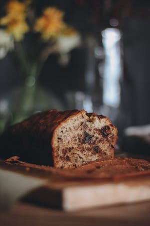

Home
Chocolate Chip Banana Bread

Soft, dessert loaf made with bananas and chocolate chips.
Ingredients
- 2 cups all purpose flour
- 1/2 cup granulated sugar
- 1/2 cup light brown sugar
- 3 teaspoons baking powder
- 1/2 teaspoon salt
- 1 teaspoon ground cinnamon
- 1/4 teaspoon nutmeg
- 1 1/3 cups mashed ripe banana
- 1/2 cup soy milk
- 3 tablespoons coconut oil
- 1 fax egg: 1 tablespoon ground flaxseed + 3 tablespoons hot water
- 1 cup semi sweet chocolate chips
Directions
- Preheat the oven to 350°F (180°C). Spray a 9×5 inch loaf pan with non-stick spray and cut out parchment paper to line the bottom.
- Sift the flour into a mixing bowl and add the white granulated sugar, light brown sugar, baking powder, salt, cinnamon and nutmeg and mix together.
- Measure the correct amount of banana and add it to your blender jug along with the soy milk and coconut oil. Blend until just blended.
- Prepare your flax egg by mixing 1 Tablespoon ground flaxseed with 3 Tablespoons Hot Water and allowing to sit for a minute until it becomes gloopy.
- Pour the blended banana mix over the dry ingredients and add the flax egg and mix into a thick batter.
- Add the vegan chocolate chips and fold them in.
- Pour the batter into your prepared loaf pan and spread it out evenly. Sprinkle vegan chocolate chips on top.
- Place into the oven and bake for 60-70 minutes or until a toothpick inserted into the center comes out clean (melted chocolate is fine, wet batter is not).
- Let it cool in the pan for a few minutes before transferring it to a wire cooling rack to cool.